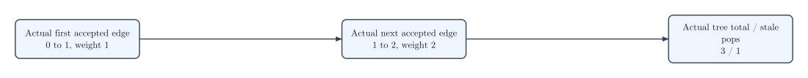
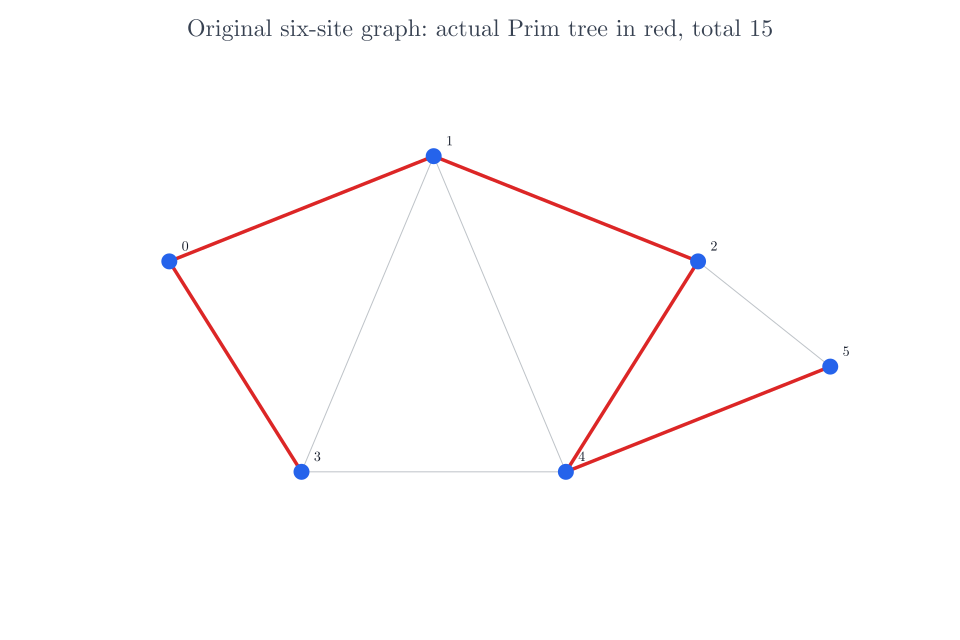
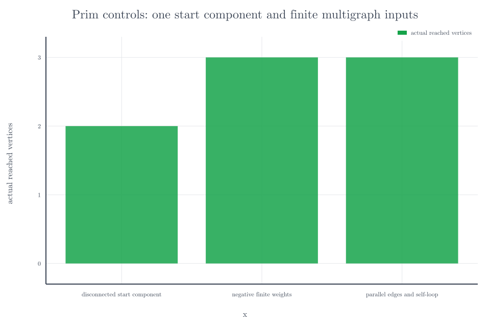
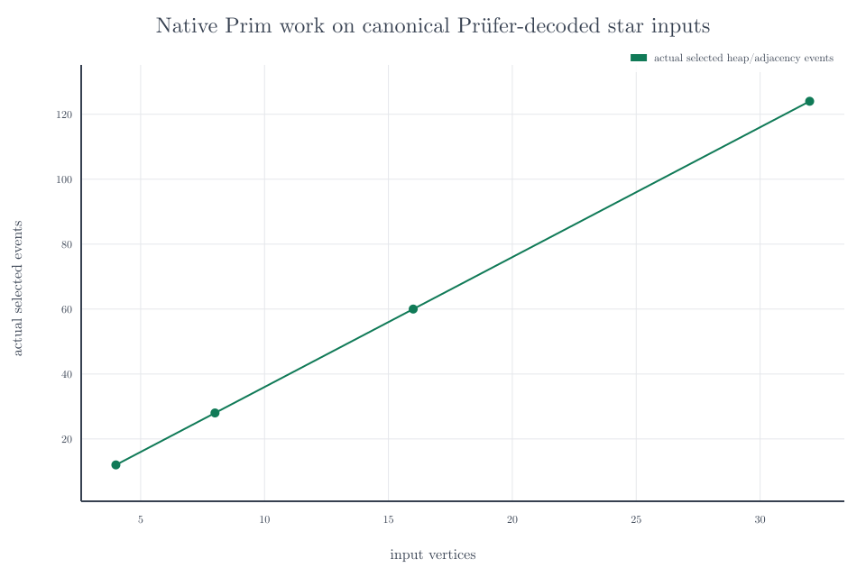

Prim: actual lazy-frontier choices and stale entries
Abstract
A minimum crossing edge attaches one new vertex to the growing tree. The native implementation retains its historical lazy min-heap and lexicographic(weight,from,to) ties, while optional events now show its actual pushes, pops and stale removals. The original distinct-weight six-site network remains the substantive example. It is small enough to inspect the complete selected edge order and total15; no external graph dataset is needed to establish these cut decisions.
Mechanism and mathematical scope
A tiny actual producing history
The table and native concept diagram read the same producing execution. Every block below is a complete editable C++ program.
#include <dm/dm.hpp>
int main() {
namespace a = dm::algorithms;
namespace g = dm::graphics;
std::filesystem::create_directories("build");
auto t = a::prim_trace(3, {{0, 1, 1}, {0, 2, 3}, {1, 2, 2}});
std::vector<a::PrimEvent> accepted;
std::print("\n| actual event | edge | weight | actual heap size after | accepted | reached after |\n| " "--- | --- | ---: | ---: | --- | ---: |\n");
for (auto &e : t.events) {
std::print("| {} | {} to {} | {} | {} | {} | {} |\n",
e.push ? "push" : "pop", e.from, e.to, e.weight,
e.frontier_after, e.accepted, e.reached_after);
if (e.accepted)
accepted.push_back(e);
}
g::Diagram d;
d.node("n0", {0, 0},
std::format("Actual first accepted edge\n{} to {}, weight {}",
accepted[0].from, accepted[0].to, accepted[0].weight));
d.node("n1", {10, 0},
std::format("Actual next accepted edge\n{} to {}, weight {}",
accepted[1].from, accepted[1].to, accepted[1].weight));
d.node("n2", {20, 0},
std::format("Actual tree total / stale pops\n{} / {}",
t.run.tree.total_weight, t.run.stale));
d.edge("n0", "n1").edge("n1", "n2");
d.save_svg("build/prim_tiny.svg");
}| actual event | edge | weight | actual heap size after | accepted | reached after |
|---|---|---|---|---|---|
| push | 0 to 1 | 1 | 1 | false | 1 |
| push | 0 to 2 | 3 | 2 | false | 1 |
| pop | 0 to 1 | 1 | 1 | true | 2 |
| push | 1 to 2 | 2 | 2 | false | 2 |
| pop | 1 to 2 | 2 | 1 | true | 3 |
| pop | 0 to 2 | 3 | 0 | false | 3 |

The retained original experiment
#include <dm/dm.hpp>
int main() {
namespace a = dm::algorithms;
namespace g = dm::graphics;
std::filesystem::create_directories("build");
const std::vector<a::WeightedEdge> edges{{0, 1, 3}, {0, 3, 4}, {1, 2, 5},
{1, 3, 6}, {1, 4, 7}, {2, 4, 2},
{2, 5, 8}, {3, 4, 9}, {4, 5, 1}};
auto t = a::prim_trace(6, edges, 0);
std::print("Original graph: actual total {}, reached {}, connected {}.\n",
t.run.tree.total_weight, t.run.reached, t.run.tree.is_connected);
std::print("\n| actual attachment order | from | to | weight |\n| ---: | ---: | ---: | ---: |\n");
for (std::size_t i = 0; i < t.run.tree.edges.size(); ++i) {
auto[u, v, w] = t.run.tree.edges[i];
std::print("| {} | {} | {} | {} |\n", i, u, v, w);
}
const std::vector<std::pair<double, double>> pos{{0, 2}, {2, 3}, {4, 2},
{1, 0}, {3, 0}, {5, 1}};
auto p = g::RPlot::create();
for (auto[u, v, w] : edges)
p.lines({pos[u].first, pos[v].first}, {pos[u].second, pos[v].second},
"", {190, 195, 200}, 1);
for (auto[u, v, w] : t.run.tree.edges)
p.lines({pos[u].first, pos[v].first}, {pos[u].second, pos[v].second},
"", {220, 38, 38}, 3.5);
std::vector<double> x, y;
for (std::size_t i = 0; i < pos.size(); ++i) {
x.push_back(pos[i].first);
y.push_back(pos[i].second);
p.text(pos[i].first + .12, pos[i].second + .15, std::to_string(i),
{17, 24, 39}, 14);
}
p.points(x, y, {37, 99, 235}, 8).title(std::format("Original six-site graph: actual Prim tree in red, total {}",
t.run.tree.total_weight)).hide_axes(true).x_limits(-.6, 5.8).y_limits(-.8, 3.8);
p.save_svg("build/prim_original.svg");
}Original graph: actual total 15, reached 6, connected true.
| actual attachment order | from | to | weight |
|---|---|---|---|
| 0 | 0 | 1 | 3 |
| 1 | 0 | 3 | 4 |
| 2 | 1 | 2 | 5 |
| 3 | 2 | 4 | 2 |
| 4 | 4 | 5 | 1 |

Explicit controls
#include <dm/dm.hpp>
int main() {
namespace a = dm::algorithms;
namespace g = dm::graphics;
std::filesystem::create_directories("build");
std::vector<std::vector<a::WeightedEdge>> edges{{{0, 1, 2}},
{{0, 1, -2}, {1, 2, 1}},
{{0, 0, -9}, {0, 1, 5},
{0, 1, 1}, {1, 2, 2}}};
std::vector<std::size_t> n{4, 3, 3};
std::vector<std::string> labels{"disconnected start component",
"negative finite weights",
"parallel edges and self-loop"};
std::vector<double> v;
std::print("\n| fixture | actual total | actual reached | connected | actual stale pops |\n| --- | ---: " "| ---: | --- | ---: |\n");
for (std::size_t i = 0; i < edges.size(); ++i) {
auto r = a::prim_run(n[i], edges[i]);
v.push_back(r.reached);
std::print("| {} | {} | {} | {} | {} |\n", labels[i],
r.tree.total_weight, r.reached, r.tree.is_connected, r.stale);
}
bool bad = false;
try {
a::prim(2, {{0, 1, std::numeric_limits<double>::quiet_NaN()}});
} catch (const std::invalid_argument &) {
bad = true;
}
std::print("All nonfinite edge weights rejected before heap work: {}.\n",
bad);
auto p = g::RPlot::barplot(v, labels, "actual reached vertices");
p.title("Prim controls: one start component and finite multigraph inputs").y_label("actual reached vertices");
p.save_svg("build/prim_controls.svg");
}| fixture | actual total | actual reached | connected | actual stale pops |
|---|---|---|---|---|
| disconnected start component | 2 | 2 | false | 0 |
| negative finite weights | -1 | 3 | true | 0 |
| parallel edges and self-loop | 3 | 3 | true | 3 |
All nonfinite edge weights rejected before heap work: true.

Actual selected work and sensitivity
#include <dm/dm.hpp>
int main() {
namespace a = dm::algorithms;
namespace g = dm::graphics;
std::filesystem::create_directories("build");
std::vector<double> x, y;
std::print("\n| Prüfer-decoded star vertices | actual heap pushes | actual heap pops | actual adjacency " "reads | selected events |\n| ---: | ---: | ---: | ---: | ---: |\n");
for (std::size_t n : {4, 8, 16, 32}) {
auto tree = a::prufer_to_tree(std::vector<std::size_t>(n - 2, 0));
std::vector<a::WeightedEdge> edges;
for (auto[u, v] : tree)
edges.emplace_back(u, v, 1.);
auto r = a::prim_run(n, edges);
x.push_back(n);
y.push_back(r.operations);
std::print("| {} | {} | {} | {} | {} |\n", n, r.pushes, r.pops,
r.adjacency_entries, r.operations);
}
auto p = g::RPlot::create();
p.lines(x, y, "actual selected heap/adjacency events", {16, 122, 87}).points(x, y, {16, 122, 87}, 5).title("Native Prim work on canonical Prüfer-decoded star inputs").x_label("input vertices").y_label("actual selected events");
p.save_svg("build/prim_work.svg");
}| Prüfer-decoded star vertices | actual heap pushes | actual heap pops | actual adjacency reads | selected events |
|---|---|---|---|---|
| 4 | 3 | 3 | 6 | 12 |
| 8 | 7 | 7 | 14 | 28 |
| 16 | 15 | 15 | 30 | 60 |
| 32 | 31 | 31 | 62 | 124 |

API and interpretation
A disconnected call returns only the tree of the starting component, rather than an all-component forest. Self-loops and stale heap entries can be observed but never become accepted tree edges. The selected event count excludes heap-internal comparisons, allocations and input validation. With parallel edges, a heap bound in terms of log(E+1) is appropriate; the report does not import a simple-graph O(E log V) statement without its assumptions. Finite total-weight overflow is checked.
Reusable producers, fixtures and histories live in the canonical C++ library. Captured records own their values and do not come from a separate report replay. Selected counters and record/scalar policies are specified at their API boundaries; they are not peak-byte or wall-time budgets. Synthetic structural inputs are controlled fixtures for these mechanisms.
References
Verified in the shared ten-document batch: 106 algorithm CTest cases plus90 graphics cases;21 directly instrumented algorithm ASan/UBSan cases and renderer SVG/PNG sanitizer probe;119 executable public examples;587/587 scoped definitions plus9 changed legend definitions;10 hovers;56287 independent records/278204 checks;frozen compatibility for all ten algorithm families;13 checkout/installed standalone headers and linked consumer;40 executed programs/40 reviewed figures with both exports. The legacy source is retired only after these gates pass.